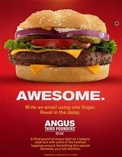
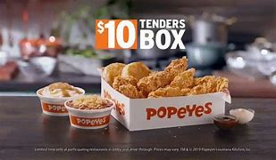

|
Austrian Grand Prix
Charles Leclerc managed to narrowly edge out Max Verstappen to win this years Austrian Grand Prix as Lewis Hamilton also found a spot on the podium. By taking the Austrian Grand Prix on Sunday, Leclerc was able to leapfrog Max Verstappen's in the Drivers' Championship standings. Ferrari played their cards right in terms of strategy earning good points for the team at the Red Bull Ring, and the Italian team’s driver, seemed to simply outclass the Dutchman for the entirety of the race. Unfortunately for Ferrari, they were not able to secure the top two finish they wanted as Sainz was unable to finish the race due to an engine failure in the closing stages of the race as he battled with Verstappen before his car went up in flames in another unfortunate occurrence for the Spaniard. Leclerc almost threw his lead away at the end with his own issues in the form of his throttle pedal but luckily for Ferrari, he hung on to claim an incredibly impressive victory. Fan favourite Lewis Hamilton did well for himself similarly, managing to secure a podium finish from far back in his 8th position start.
|
 |
|
Nada for Nadal
Wimbledon, Wimbledon, Wimbledon. How it always entertains us, with its tricks and turns and this year is no different. Rafael Nadal has withdrawn from the competition, ahead of his semi-final match against Nick Kyrgios, due to a severe abdominal injury. The Spaniard received a form of treatment during his quarter-final match, on the 6th July, against Taylor Fritz where he miraculously defied his pain to win in five sets. Nadal upon announcing his withdrawal stated that,”I have tried a lot of times in my career to keep going but it’s obvious the injury will get worse”. The 36 year-old confirmed to the public that he had a tear in his abdominal muscle, which prevents him from being able to play competitively for at least 2 matches. The 22-time Grand Slam champion had only been practicing at Wimbledon, away from the medias eye, on the morning on the 7th, before he ultimately called for a news conference. Nadal’s final message to reporters was,”The most important thing is happiness more than any titles. I can’t risk that match and stay 2 or 3 months out of the competition.” Kyrgios, who will now play Novak Djokovic or Cameron Norrie in Sunday’s final, added a heartfelt statement on social media, affirming his respect, declaring: “We all hope to see a healthy you soon.” We all wish Nadal the best in his recovery and look forward to seeing him return to the court.
|
 |
|
The World Waits...
he World Cup, an infamous occasion having first taken place in 1930 in Montevideo, Uruguay, is back after a four year wait…. but in the winter? Due to it taking place in Qatar, a nation with an average temperature of 36.1 C in June, the tournament has been forced to take place in the winter with the first game taking place on the 21st of November. Despite the delay, the tournament still oozes quality across the globe. Here I have compiled a starting XI made up The World Cup’s finest.
Formation: 4231 Manager: Didier Deschamps-The former Marseille manager has a career managerial win percentage of 53.97%
Goalkeeper- Thibaut Courtois-The Belgian shot stopper kept a clean sheet in 44.44% of his La Liga matches this season.
Left Back-João Cancelo-The Manchester City full back has an estimated market value of £58.50m.
Centre Back-Ruben Dias-The former Benfica star boy had a tackle success percentage of 73% in the Premier League this season.
Centre Back-Virgil Van Dijk-The Dutch giant won 147 duels in the Premier League this season.
Right Back-Trent Alexander Arnold-The attacking full-back created 18 big chances for Liverpool in the Premier League this season.
Defensive Midfielder-Joshua Kimmich-The expansive German all-rounder averaged 15.13 passes into the final third for Bayern Munich this season.
Defensive Midfielder-Rodri-The Spanish holding midfielder played 180 accurate long balls for Manchester City in the Premier League this season.
Left Winger-Neymar Jr-The flamboyant winger has scored 74 goals for Brazil in 119 games.
Attacking Midfielder-Kevin De Bruyne-The PFA player of the winner got 23 g/a for Manchester City in the Premier League this season.
Right Winger-Lionel Messi-The sensational Argentinian has a club total of 923 g/and is widely considered the greatest of all time.
Centre Forward-Cristiano Ronaldo-The Manchester marksman has the most international goals of all time and is thus arguably one of the best.
|
 |